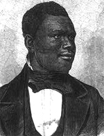

|

|

|
|
|
Freedman, abolitionist, and preacher, Anthony Burns was an escaped
slave whose arrest led to a riot in Boston and the passage of the
Massachusetts Personal Liberty Act. The incident was a product of larger
tensions that drove a wedge between North and South, and ultimately
sparked the Civil War.
Burns was born in Stafford County, Virginia, the youngest of thirteen
children. Burns' father worked at a stone quarry and his mother was a
cook in service of John and Catherine Suttle. John Suttle's death
compromised the family's finances; in turn, Catherine sold a number of
slaves, including five of Anthony's siblings. To pay off the family
debt, Anthony's mother was hired out to a family in another city,
separating her from her children.
At the age of seven, Burns was hired out to run errands for a group
of local women. This was followed by a series of contracts in which he
was hired out to several different families. During his service to the
Foote family, Burns' right hand was caught in a mill wheel. His hand was
badly broken and a scar formed where the bone had protruded from the
hand. This incident led Burns to conclude that he needed to commit
himself to God. He asked his master for permission to be baptized, and
joined the Baptist church. Burns, who had learned the alphabet as a
child, taught himself to read and write in church. Though neither
ordained nor completely literate, Burns preached to slaves, performed
slave marriages, buried the dead, and taught other slaves to read and
write.
Burns' involvement with the church heightened his desire to be free.
Given the opportunity to hire himself out, he took a job at the Richmond
docks, where he befriended a sailor who agreed to let him to hide
amongst cargo headed for Boston. Burns made his escape in March of 1854.
In Boston, Burns found work at a clothing store. However, on the way
home from his job on May 24, 1854, he was arrested as a fugitive slave
under the terms of the Fugitive Slave Act of 1850 and taken to the
Boston Court House. Many Bostonians were outraged by the arrest, and a
public meeting was held in Faneuil Hall the next day. This led to a
rescue attempt by Reverend Thomas Higginson and other abolitionists from
the New England Antislavery Society's Vigilance Committee. The group
attacked the courthouse, attempting to force the front door open, and a
violent altercation between the abolitionists and volunteer deputies
ensued. The incident led to the arrest of thirteen people and the death
of one marshal.
The rescue attempt unsuccessful, Burns went on trial shortly
thereafter. He was defended by Richard H. Dana Jr., Charles M. Ellis,
and Robert Morris, who argued that Burns had been mistaken for someone
else. United States Commissioner Edward G. Loring, who heard the case,
rejected this defense and ruled that Burns should be returned to
slavery. Upon his return to Virginia, Burns was jailed. He remained
there until he was sold to David McDaniel, a planter from North
Carolina. Burns worked as a coachman and stable keeper for McDaniel
until Reverend Leonard A. Grimes and the Twelfth Baptist Church of
Boston purchased Burns' freedom for $1,300. Thereafter, Burns returned
to Boston and spoke about his experience as a fugitive slave. He also
attended Oberlin College on a scholarship, and served as pastor of
churches in both Indianapolis and Ontario, Canada.
As Burns enjoyed his freedom, the government of Massachusetts worked
to make certain that his experience was not repeated. In 1855, the
legislature passed the Personal Liberty Act. Designed to nullify the
Fugitive Slave Act, the bill prohibited the state's police from
capturing runaway slaves, decreed that the state's judges could not
issue warrants for runaway slaves, forbade the state's lawyers from
prosecuting runaway slaves, and barred the state's prisons and jails
from housing runaway slaves. The Massachusetts Act, which was followed
by other "personal liberty laws" in other states, was successful. To the
consternation of Southerners, Burns was the last fugitive slave ever to
be arrested in New England. Naturally, the former slave was gratified by
this development, though he did not live to see the fulfillment of his
ultimate goal--the end of slavery. He died of tuberculosis in July of
1862, just a few months before Lincoln issued the Emancipation
Proclamation.
Source: Christopher Bates, ed. The Encyclopedia of the Early
Republic and Antebellum America (Armonk, NY: M.E. Sharpe, 2010), 173.
|